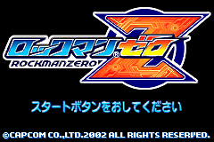

Rockman Zero (Japan) (Virtual Console)
Stateless / Passcode gbakit Built-In 💾 MultiBoot
Cartridge Identity
- Game Code
ARZJ(FamilyARZ)- Header Title
ROCKMAN ZERO- Maker / Revision
08/ rev0- ROM Size
- 8.0 MiB (8,388,608 B)
- Save Media
None / Unknown- SHA-256
8699453003d93dddc0472c5965f158c21268d040c21372351f854cd3ebb8dae1- Engine / SDK Group
comm-021(12 families)
Screenshots


Link Cable & Multiplayer Communications
This title contains detected communication capabilities: 💾 MultiBoot.
Detailed protocol specifications, SIO registers, Joybus commands, and MultiBoot sequences are documented in the Link & Multiplayer Reference.
- Single-Cart MultiBoot
- Single-Cartridge MultiBoot (Download Play) client/server handler · Thumb SWI 0x25 (
0xDF25):0x27139e,0x2713f2,0x2b24a8,0x53b8ae
Battery Save Support in gbakit
Built-in definition (ARZJ)
gbakit save verify ARZJ save.sav
gbakit save decode ARZJ save.sav
gbakit save fix ARZJ damaged.sav -o repaired.savROM Assets, Compression & Audio
- BIOS Compression
- LZ77 (
0x10): 2 streams · RLE (0x30): 0 streams - ROM Pointer Tables
- 168 tables (0 pointing to validated compressed streams)
- SDK Backup Tags
SRAM_V112
Text, Fonts & Scene Data
- Primary Text Encoding
- Plain ASCII (uncompressed) (
85ASCII strings ·1Shift-JIS runs) - Font & VWF Indicators
- VWF Width Table 1bpp Font · BIOS SWIs: BitUnPack
0x10:10· LZ770x11/12:21· Huffman0x13:7· RLE0x14/15:14 - Scene & Packaging
77ROM pointer tables (≥32 entries,2≥200) ·8relativeu32TOCs ·292OAM metasprite hits
Hardware MMIO Subsystems
ppu_display0x800099c,0x8001b68,0x8001c14,0x8001cc8,0x800716c
Regional Variants & Revisions (Family ARZ)
- Rockman Zero (Japan) (
ARZJ, 8 MiB)